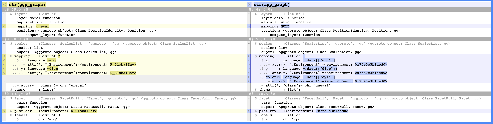

install.packages(c("testthat", "shinytest2", "covr"))
library(testthat)
library(shinytest2)
library(covr)Tests
Caution!
This section is currently being revised. Thank you for your patience.
Writing tests for shiny app-packages pose some unique challenges. Shiny functions are written in the context of its reactive model, so some conventional testing techniques and methods for regular R packages don’t directly apply. Fortunately, the infrastructure for storing and running tests in your app-package is identical to a standard R package.
Mastering Shiny
monthApp tests
The Testing chapter of Mastering Shiny covers setting up and running unit tests with testthat, and how to use Shiny’s testServer() function to test reactivity.
However, if you downloaded or cloned the monthApp example from the Modules chapter, then clicked on Test in the Build pane, you saw the following:

monthApp app-packageThis chapter will attempt to connect the concepts in the Testing chapter to our shiny app-package, and provide some general strategies to consider adopting before moving your application into production.
This chapter will cover three layers of tests: unit tests, integration/module tests, and end-to-end or system tests. I’ll focus on what to test and why to test it, not how to write tests, because plenty of those resources exist. 1 2 3 The only exception being some tricks I’ve learned for using testServer() with module server functions.4
I’ll also touch on the links between user specifications, functional requirements, and show how to use a traceability matrix to track your tests.
The code chunk below will load the necessary testing packages.
(If you’re using devtools, you won’t have to worry about installing testthat and covr)
User specifications & requirements
When developing tests, everyone is faced with the same two questions:
- What do I test?
- How do I test it?
The shiny app in pkgApp we’ve been developing doesn’t have a software requirements specification (SRS), which is the document that typically captures the application’s intended purpose or the problem it’s designed to solve. In regular app development, the SRS contains the user specifications, feature requirements and functional requirements, which are are the guidelines that direct the development process, albeit from slightly different perspectives.
Understanding their relationship is important for knowing the application we’re developing meets the technical standards and satisfies the user needs.
User Requirements
User Requirements are what the end-user (i.e., a film analyst) wants to achieve with the dashboard.5
Feature Requirements
Each Feature Requirement is a high-level description of the feature’s capabilities (i.e, the scatter plot), phrased at satisfying the end-user’s needs outlined in the User Requirements.6
Functional Requirements
The Functional Requirements are written for the developer and provide technical details on how the feature (i.e., the scatter plot) should behave and what it needs to do.7
Traceability matrix
In our app-package, we want to ensure that corresponding functionalities and tests address all user requirements and that every functionality is justified in terms of user needs and has been tested. A traceability matrix is typically used to link the user specifications (and corresponding feature requirements) to the functional requirements they give rise to and the tests used to verify that the application has been developed correctly.
Fortunately, the R package structure gives us the tools we need to capture this documentation in the form of vignettes. We’ll write the specifications for pkgApp in the specs vignette by using usethis::use_vignette():

This section’s code is in the pkgApp repo’s 08_tests-specs branch
usethis::use_vignette("specs")Adding our first vignette to the vignettes/ folder does the following:
-
Adds the
knitrandrmarkdownpackages to theSuggestsfield inDESCRIPTION8Suggests: knitr, rmarkdown -
Adds
knitrto theVignetteBuilderfield9VignetteBuilder: knitr Adds
inst/docto.gitignoreand*.html,*.Rtovignettes/.gitignore10
When building the traceability matrix, start with the user specifications. The general language used in these descriptions can typically provide a basis for deriving the more technical (but still high-level) feature requirements, which form a basis for us to derive multiple functional requirements.
| User Specification | Feature Requirement | Functional Requirements |
|---|---|---|
| UR1: scatter plot data visualization | FE1: interactive scatter plot (two data sources, options to explore variables of interest) | FR1: data source |
In this way, a single user specification usually gives rise to multiple functional requirements.
| User Specification | Feature Requirement | Functional Requirements |
|---|---|---|
| UR1: scatter plot data visualization | FE1: interactive scatter plot (two data sources, options to explore variables of interest) | FR1: data source |
| - | - | FR2: user-input updating |
| - | - | FR3: color-coded data points |
| - | - | FR4: plot axis and legend |
| - | - | FR5: plot zoom capability |
Now that we have the technical details for our application requirement, we can identify what needs to be tested:
| User Specification | Feature Requirement | Functional Requirements | Test |
|---|---|---|---|
| UR1: scatter plot data visualization | FE1: interactive scatter plot (two data sources, options to explore variables of interest) | FR1: data source | T1: |
| - | - | FR2: user-input updating | T2: |
| - | - | FR3: color-coded data points | T3: |
| - | - | FR4: plot axis and legend | T4: |
| - | - | FR5: plot zoom capability | T5: |
After we’ve written our tests, we can include their results in the matrix to ensure:
Each user specification has an accompanying feature requirement.
The feature requirements have been broken down into precise, measurable, and testable pieces of code.
Tests have been written for each functional requirement (and indicate whether they are passing or not).
| User Specification | Feature Requirement | Functional Requirements | Test | Status |
|---|---|---|---|---|
| UR1: scatter plot data visualization | FE1: interactive scatter plot (two data sources, options to explore variables of interest) | FR1: data source | T1: | T1 Status: |
| - | - | FR2: user-input updating | T2: | T2 Status: |
| - | - | FR3: color-coded data points | T3: | T3 Status: |
| - | - | FR4: plot axis and legend | T4: | T4 Status: |
| - | - | FR5: plot zoom capability | T5: | T5 Status: |
Vignettes are a great place to store this information (although it probably shouldn’t be the only place to store it), because it’s self-contained and travels with the package whenever the code is updated.
The test suite
Multiple strategies exist for testing code. For example, if you’ve adopted test-driven development (TDD)11, you’ll develop tests before writing utility functions, modules, or your standalone app function. However, if you’re a mere mortal like the rest of us, you’ll typically develop your tests and functions in tandem.
Regardless of the testing strategy, we’ll set up the testing infrastructure in our app-package with the testthat package:
use_testthat()
In packages using devtools, the unit testing infrastructure is built with usethis::use_testthat():
usethis::use_testthat()-
Set active project to current working directory:
✔ Setting active project to '/path/to/pkgApp' -
In the
DESCRIPTIONfile, add theSuggestsfield and includetestthat (>= 3.0.0)and the testthat edition (Config/testthat/edition: 3)✔ Adding 'testthat' to Suggests field in DESCRIPTION ✔ Adding '3' to Config/testthat/edition -
A new
tests/folder is created, with atestthat/subfolder:✔ Creating 'tests/testthat/' -
The
testthat.Rfile is created (sometimes referred to as the test ‘runner’ because it runs all your tests).✔ Writing 'tests/testthat.R'
Finally, we’re given some advice on the next step for creating our first test:
• Call `use_test()` to initialize a basic test file and open it for editing.Our new tests/ folder structure is below:
tests/
├── testthat
└── testthat.R
2 directories, 1 fileUnit tests
This section’s code is in the pkgApp repo’s 08_testthat-tests branch
If I’m writing write a unit test for the scatter_plot() function in R/scatter_plot.R, I’ll create test file with usethis::use_test("scatter_plot").
New tests with use_test()
usethis::use_test("scatter_plot")Unit test files
The IDE will automatically open the new test file:
✔ Writing 'tests/testthat/test-scatter_plot.R'
• Modify 'tests/testthat/test-scatter_plot.R'Tests
The new test file contains a boilerplate test (I’ve included the argument names):
test_that(desc = "multiplication works", code = {
expect_equal(2 * 2, 4)
})Each testthat test has a test context (supplied to the desc argument) followed by the test code (supplied in curly brackets). When a test is run, you’ll see feedback on whether it passes or fails:
test_that(desc = "multiplication works", code = {
expect_equal(2 * 2, 4)
})
## Test passed 🥳Expectations
Most expectation have two parts: an observed object, and an expected object. The observed object is an artifact of some code you’ve written, and it’s being compared against a known result (i.e., what is expected)
expect_equal(
object = 2 * 2,
expected = 4)Comparisons
Comparison is the backbone of testing, and I’ve found knowing what package is performing the underlying comparison often saves me from surprising tests results.
For example, testthat::expect_equal() compares the observed and expected objects with the waldo package, with some help from diffobj.
waldo
If you’d like a preview of a comparison before writing a formal test, you can pass the your observed and expected objects to waldo::compare() to see what the result will be, but be mindful of the difference in argument names:
For example, suppose we have two objects: old and new
old
## # A tibble: 3 × 3
## chr num fct
## <chr> <dbl> <ord>
## 1 B 1 L
## 2 C 2 M
## 3 D 3 Hnew
## # A tibble: 3 × 3
## CHR num fct
## <chr> <int> <fct>
## 1 B 1 low
## 2 C 2 med
## 3 D 3 highThe outputs below show us both ‘No differences’ and the types of differences detected with waldo::compare():
compare(
x = old,
y = old)
## ✔ No differencescompare(
x = old,
y = new)
## `class(old)`: "tbl_df" "tbl" "data.frame"
## `class(new)`: "data.frame"
##
## `names(old)`: "chr" "num" "fct"
## `names(new)`: "CHR" "num" "fct"
##
## `old$chr` is a character vector ('B', 'C', 'D')
## `new$chr` is absent
##
## `old$num` is a double vector (1, 2, 3)
## `new$num` is an integer vector (1, 2, 3)
##
## `class(old$fct)`: "ordered" "factor"
## `class(new$fct)`: "factor"
##
## `levels(old$fct)`: "L" "M" "H"
## `levels(new$fct)`: "low" "med" "high"
##
## `old$CHR` is absent
## `new$CHR` is a character vector ('B', 'C', 'D')compare() displays the differences in classes, names, and any individual value differences.
diffobj
If you’re using Posit Workbench, the diffobj package has a colorful display for making comparisons in the IDE.
The differences can be displayed vertically with diffobj::diffObj():
diffObj(
old,
new)
diffobj::diffObj()If you want to view the structure (str()) differences, you can use diffobj::diffStr():
diffStr(
old,
new)
diffobj::diffStr()After seeing the old vs new comparisons with waldo and diffobj, you should notice the similarities in the results of a testthat test on the same objects:
[ FAIL 1 | WARN 0 | SKIP 0 | PASS 0 ]
── Failure (test-old-vs-new.R:18:3): old vs. new ──────────
`old` (`actual`) not equal to `new` (`expected`).
`class(actual)`: "tbl_df" "tbl" "data.frame"
`class(expected)`: "data.frame"
`names(actual)`: "chr" "num" "fct"
`names(expected)`: "CHR" "num" "fct"
`actual$chr` is a character vector ('B', 'C', 'D')
`expected$chr` is absent
`class(actual$fct)`: "ordered" "factor"
`class(expected$fct)`: "factor"
`levels(actual$fct)`: "L" "M" "H"
`levels(expected$fct)`: "low" "med" "high"
`actual$CHR` is absent
`expected$CHR` is a character vector ('B', 'C', 'D')
[ FAIL 1 | WARN 0 | SKIP 0 | PASS 0 ]Test supporting files
Sometimes testing functions in isolation is not enough and it’s useful to include either helper functions or data. This is especially true when the code we’re testing goes beyond the function’s borders, such as connecting to a database or API. The term for these supporting files are test fixtures,12 and below we’ll cover including them in the tests/ folder.
Test data
Test data can be helpful for experimenting with various table and graphing package outputs, file formats, and application performance. Test data files can be stored in tests/testthat/fixtures/, and I’ve provided an example below of of the tidy ggplot2movies data we used in a previous branch.
The code used to create the test data (make-ggp2-movies.R) is stored in the same location as the output it creates (i.e., ggp2_movies.rds):
show/hide make-ggp2-movies.R
# code to prepare `ggp2movies` test data
# pkgs <- c('ggplot2movies', 'tidyr', 'dplyr', 'stringr', 'purrr')
# install.packages(pkgs, quiet = TRUE)
# load packages --------------------
library(tidyr)
library(dplyr)
library(stringr)
library(purrr)
ggp2movies <- ggplot2movies::movies |>
dplyr::mutate(id = 1:n()) |>
tidyr::pivot_longer(
cols = Action:Short,
names_to = "Genre",
values_to = "GenreMember"
) |>
dplyr::group_by(
dplyr::across(-c(Genre, GenreMember))) |>
tidyr::nest() |>
dplyr::mutate(
Genres = purrr::map(data, ~ if (all(.x$GenreMember == 0)) {
character(0)
} else {
.x$Genre[.x$GenreMember == 1]
})
) |>
dplyr::ungroup() |>
dplyr::select(title, Genres, length, year,
budget, rating, votes, mpaa) |>
dplyr:::mutate(
genres = purrr::map_chr(
.x = Genres,
.f = stringr::str_c, collapse = ", "
)
) |>
dplyr::select(title, genres, length, year,
budget, avg_rating = rating,
votes, mpaa) |>
dplyr::mutate(
mpaa = dplyr::na_if(x = mpaa, y = ""),
mpaa = factor(mpaa,
levels = c("G", "PG", "PG-13", "R", "NC-17"),
labels = c("G", "PG", "PG-13", "R", "NC-17")
),
genres = dplyr::na_if(x = genres, ""),
genres = factor(genres)
) |>
tidyr::drop_na()
# save to tests/testthat/fixtures/
saveRDS(object = ggp2movies, file = "tests/testthat/fixtures/ggp2_movies.rds")tests/
└── testthat/
└── fixtures/
├── ggp2_movies.rds
└── make-ggp2-movies.R
3 directories, 2 filesTest helpers
Test helpers are typically functions that make testing a little easier. I’ve included a small example function that includes nicely formatted messages for testing, test_cmt().
show/hide test_cmt() helper
# test comment helper
test_cmt <- function(start = NULL, end = NULL, msg) {
if (is.null(start) & is.null(end)) {
cat("\n",
stringr::str_glue("[{Sys.time()}| {msg}]"),
"\n")
} else if (!is.null(start) & is.null(end)) {
cat("\n",
stringr::str_glue("[ START | {Sys.time()} | {start} = {msg}]"),
"\n")
} else if (is.null(start) & !is.null(end)) {
cat("\n",
stringr::str_glue("[ END | {Sys.time()} | {end} = {msg}]"),
"\n")
} else {
cat("\n",
stringr::str_glue("[ START | {Sys.time()} | {start} = {msg}]"),
"\n")
cat("\n",
stringr::str_glue("[ END | {Sys.time()} | {end} = {msg}]"),
"\n")
}
}test_cmt() can be used to log when your test beings and ends, and includes a message for the context.13
test_that(desc = "multiplication works", code = {
test_cmt(start = "multiplication", msg = "2 * 2 = 4")
expect_equal(2 * 2, 4)
test_cmt(end = "multiplication", msg = "2 * 2 = 4")
})
##
## [ START | 2023-09-18 10:20:09 | multiplication = 2 * 2 = 4]
##
## [ END | 2023-09-18 10:20:09 | multiplication = 2 * 2 = 4]
## Test passed 😸Functions like test_cmt() can be stored in tests/testthat/helper.R, which is automatically loaded with devtools::load_all():
tests/
└── testthat/
├── fixtures/
│ ├── make-ggp2-movies.R
│ └── ggp2_movies.rds
├── helper.R
└── ... all test files...Snapshots
If the expected output we’re interesting in testing is cumbersome to describe programmatically, we can consider using a snapshot tests. Examples of this include UI elements (which are mostly HTML created by Shiny’s UI layout and input/output functions) and data visualizations.14
Writing tests for graph outputs can be difficult because we’re evaluating the “correctness” of the graph is somewhat subjective and requires human judgment.
If we try to compare the output from a custom plotting function like scatter_plot() against a graph built with analogous ggplot2 code, we can see why this test will fail by passing both objects to diffobj::diffObj():
ggp_graph <- ggplot2::ggplot(mtcars,
ggplot2::aes(x = mpg, y = disp)) +
ggplot2::geom_point(
ggplot2::aes(color = cyl),
alpha = 0.5,
size = 3)
app_graph <- scatter_plot(mtcars,
x_var = "mpg",
y_var = "disp",
col_var = "cyl",
alpha_var = 0.5,
size_var = 3)
diffobj::diffObj(ggp_graph, app_graph)
diffobj::diffObj() on graph outputsThe output shows us differences in the mapping and plot environment (plot_env), which we can assume will be different in the application, so using testthat::expect_equal() will fail.
In cases like this, a snapshot test might be warranted. The vdiffr package allows us to perform a ‘visual unit test’ by saving by capturing the expected output as a snapshot that we can compare with future versions.
vdiffr
The expect_doppelganger() function from vdiffr is designed specifically to work with ‘graphical plots’.
vdiffr::expect_doppelganger(
title = "name of graph",
fig = # ...code to create graph...
)expect_doppelganger() can be dropped in test_that() like any other expectation. Below is an example comparing the graph outputs from ggplot2 and the custom scatter_plot() utility function in pkgApp.
Notice I’ve loaded the ggp2_movies.rds data15 and included the test_cmt() helper with start and end messages (before and after the test code).
test_that(desc = "scatter_plot() works", code = {
test_cmt(
start = "scatter_plot()",
msg = "ggplot2movies::movies snapshot")
ggp2_movies <- readRDS(test_path("fixtures", "ggp2_movies.rds"))
vdiffr::expect_doppelganger(
title = "scatter_plot() graph",
fig = scatter_plot(ggp2_movies,
x_var = "budget",
y_var = "avg_rating",
col_var = "mpaa",
alpha_var = 0.4,
size_var = 2.5))
test_cmt(
end = "scatter_plot()",
msg = "ggplot2movies::movies snapshot")
})Running test()s
The fourth devtools habit to adopt is regularly writing and running tests. If you’re using Posit Workbench and have devtools installed, you can test your app-package using the Build pane or the keyboard shortcut:
Ctrl/Cmd + Shift + T

devtools::test() (run all tests in your tests/ folder)When we initially run the test it passes, but with a warning that tells us the baseline snapshot was saved in tests/testthat/_snaps/:
==> Testing R file using 'testthat'
ℹ Loading pkgApp
[ FAIL 0 | WARN 0 | SKIP 0 | PASS 0 ]
[ START | 2023-09-13 11:58:04 | scatter_plot() = ggplot2movies::movies snapshot]
[ FAIL 0 | WARN 1 | SKIP 0 | PASS 1 ]
[ END | 2023-09-13 11:58:05 | scatter_plot() = ggplot2movies::movies snapshot]
── Warning (test-scatter_plot.R:4:5): scatter_plot() works ─────────────────────
Adding new file snapshot: 'tests/testthat/_snaps/scatter-plot-graph.svg'
[ FAIL 0 | WARN 1 | SKIP 0 | PASS 1 ]
Test completetest_cmt() is handy because it let’s me track how long each test takes to run (unit test should be fast).
After the inital test run, if we view the tests/ folder, we can see the new tests/testthat/_snaps is created:
tests/
├── testthat/
│ ├── _snaps/
│ │ └── scatter_plot/
│ │ └── scatter-plot-graph.svg
│ └── test-scatter_plot.R
└── testthat.RThe scatter-plot-graph.svg file is our baseline comparison object, which is then used in future tests.
Snapshots are brittle
The term “brittle” in the context of testing refers to their susceptibility to changes (meaningful or not) that can produce false negatives (i.e., a test fails due to inconsequential changes in the graph) when comparing a new graph to the baseline image.
In a typical workflow, we’d write additional tests, then load, document, and build the package:
Ctrl/Cmd + Shift + L / D / B
Subsequent tests in pkgApp will pass without a warning:
Ctrl/Cmd + Shift + T
==> devtools::test()
ℹ Testing pkgApp
✔ | F W S OK | Context
⠏ | 0 | scatter_plot
[ START | 2023-09-13 11:58:53 | scatter_plot() = ggplot2movies::movies snapshot]
⠋ | 1 | scatter_plot
[ END | 2023-09-13 11:58:54 | scatter_plot() = ggplot2movies::movies snapshot]
✔ | 1 | scatter_plot
══ Results ═══════════════════
[ FAIL 0 | WARN 0 | SKIP 0 | PASS 1 ]
😸Another option for using snapshots for testing is the expect_snapshot_file() function 16 but expect_doppelganger() is probably the better option for comparing graph outputs.
Module tests
Although they’re typically stored in a single file, modules consist of UI and server functions, which would classify their tests as ‘integration’ or ‘interaction’ testing. Still, we can only pass the module server functions to testServer(), so these are still unit tests. Below are a few examples and tips for testing modules.
testServer()
testServer() is designed to test reactive interactions, which gives us the ability to write tests to verify the inputs, outputs, and returned values from module server functions.
Initial values
Shiny inputs are initiated with a NULL value, so it’s tempting to want to test an inputId exists using expect_null(input$x). However, this test is not helpful because any value will pass this test.
For example, the test below looks like it tests an initial NULL value for input$x in mod_var_input_server():
shiny::testServer(app = mod_var_input_server, expr = {
test_cmt(start = "input$x", msg = "initial null")
testthat::expect_null(input$x)
test_cmt(end = "input$x", msg = "initial null")
})This test passes:
[ FAIL 0 | WARN 0 | SKIP 0 | PASS 0 ]
[ START | 2023-09-14 11:58:59 | input$x = initial null]
[ FAIL 0 | WARN 0 | SKIP 0 | PASS 1 ]
[ END | 2023-09-14 11:58:59 | input$x = initial null] Unfortunately, we can pass anything to expect_null() when testServer() is used this way:
shiny::testServer(app = mod_var_input_server, expr = {
test_cmt(start = "input$anything", msg = "initial null")
testthat::expect_null(input$anything)
test_cmt(end = "input$anything", msg = "initial null")
})This test also passes:
[ START | 2023-09-14 11:58:59 | input$anything = initial null]
[ FAIL 0 | WARN 0 | SKIP 0 | PASS 2 ]
[ END | 2023-09-14 11:58:59 | input$anything = initial null] To check the initial NULL value of an inputId, it’s better to build the shiny app object, then pass this to testServer().17
# build app object with shinyApp()
app <- shinyApp(ui = movies_ui(bslib = FALSE),
server = movies_server)
shiny::testServer(app = app, expr = {
# check shiny app object
test_cmt(start = "is.shiny.appobj", msg = "movies_app()")
testthat::expect_true(is.shiny.appobj(app))
test_cmt(end = "is.shiny.appobj", msg = "movies_app()")
# check input for y axis is initially NULL
test_cmt(start = "input$`vars-y`", msg = "initial NULL")
testthat::expect_null(
object = input$`vars-y`)
test_cmt(end = "input$`vars-y`", msg = "initial NULL")
})[ FAIL 0 | WARN 0 | SKIP 0 | PASS 0 ]
[ START | 2023-09-14 12:08:53 | is.shiny.appobj = movies_app()]
[ FAIL 0 | WARN 0 | SKIP 0 | PASS 1 ]
[ END | 2023-09-14 12:08:53 | is.shiny.appobj = movies_app()]
[ START | 2023-09-14 12:08:53 | input$`vars-y` = initial NULL]
[ FAIL 0 | WARN 0 | SKIP 0 | PASS 2 ]
[ END | 2023-09-14 12:08:53 | input$`vars-y` = initial NULL] Note the use of the input with the appended module IDs. This is an easy place to get tripped up with testServer(): in the app object, we have to access the inputs with input$`[module id]-[inputId]`
Returned values
To confirm the returned list of graph inputs from mod_var_input_server(), we can build the list of inputs, then pass identical values to session$setInputs() and confirm the returned object with session$returned():
shiny::testServer(app = mod_var_input_server, expr = {
test_vals <- list(
y = "audience_score",
x = "imdb_rating",
z = "genre",
alpha = 0.5,
size = 2,
plot_title = "example title"
)
session$setInputs(
y = "audience_score",
x = "imdb_rating",
z = "genre",
alpha = 0.5,
size = 2,
plot_title = "example title"
)
test_cmt(start = "returned(var_input)", msg = "var_input structure")
testthat::expect_equal(
object = session$returned(),
expected = test_vals
)
test_cmt(end = "returned(var_input)", msg = "var_input structure")
})==> devtools::test()
ℹ Testing pkgApp
✔ | F W S OK | Context
⠏ | 0 | mod_var_input_server Loading required package: shiny
[ START | 2023-09-14 12:21:17 | returned(var_input) = var_input structure]
[ END | 2023-09-14 12:21:18 | returned(var_input) = var_input structure]
✔ | 3 | mod_var_input_serverThis confirms the structure of the returned object from mod_var_input_server().
args = list()
Now that we’ve confirmed the returned values from mod_var_input_server() are in a list, we want to make sure it’s read correctly by the var_inputs argument in mod_scatter_display_server(). I’ve included the movies_server() function below refresh our memory of how this should work:18
movies_server <- function(input, output, session) {
selected_vars <- mod_var_input_server("vars")
mod_scatter_display_server("plot", var_inputs = selected_vars)
}When we pass selected_vars to the var_inputs argument of mod_scatter_display_server(), we’re not passing the returned values (this is why we don’t need the parentheses). We’re calling on the method (or function) created by reactive().
If we pause execution with the debugger,19 we can see the difference between calling selected_vars and selected_vars():
Browse[1]> selected_vars
reactive({
list(
y = input$y,
x = input$x,
z = input$z,
alpha = input$alpha,
size = input$size,
plot_title = input$plot_title
)
})
Browse[1]> selected_vars()
$y
[1] "audience_score"
$x
[1] "imdb_rating"
$z
[1] "mpaa_rating"
$alpha
[1] 0.5
$size
[1] 2
$plot_title
[1] ""This distinction becomes important when we’re testing the communication between module server functions.
test_vals <- list(x = "audience_score",
y = "imdb_rating",
z = "mpaa_rating",
alpha = 0.5,
size = 2,
plot_title = "Test title case")
shiny::testServer(
app = mod_scatter_display_server,
args = list(
var_inputs = shiny::reactive(test_vals)
), expr = {
test_cmt(start = "mod_scatter_display_server", msg = "is.reactive(inputs())")
expect_true(object = is.reactive(inputs))
test_cmt(end = "mod_scatter_display_server", msg = "is.reactive(inputs())")
}
)Behavior-driven development (BDD)
“[BDD] encourages teams to use conversation and concrete examples to formalize a shared understanding of how the application should behave.” - BDD, Wikipedia
describe()
The testthat::describe() function follows a BDD format:
it()
System/end-to-end tests
shinytest2
Test coverage
covr
covrpage
Continuous Integration (CI)
end testing.qmd
Unit tests are covered extensively in R Packages, 2ed and the
testthatdocumentation↩︎shinytest2has excellent documentation (and videos), and I highly recommend reading through those resources.↩︎Mastering shiny has a Chapter on Testing, which covers unit tests and
testServer(), and also includes some tips for using JavaScript withshinytest(not to be confused withshinytest2)↩︎The
testServer()documentation is sparse, so I’ll provide a few tips and tricks I’ve learned for testing module server functions.↩︎User Requirements are sometimes referred to as “user stories,” “use cases,” or “general requirements”↩︎
“Feature requirements” and “functional requirements” are sometimes used interchangeably, but they refer to different aspects of the software. Feature requirements are the high-level characteristics the system should have and often capture a collection of smaller functionalities (which are broken down into specific functional requirements).↩︎
Functional requirements describe what a software system should do and are precise, measurable, and testable.↩︎
We didn’t cover the
Suggestsfield in the Dependencies chapter, but “lists packages that are not necessarily needed. This includes packages used only in examples, tests or vignettes … and packages loaded in the body of functions.” - Writing R Extensions, Pakcage Dependencies↩︎The documentation on
VignetteBuilderis an excellent example of how challenging if can be to manage dependencies, “Note that if, for example, a vignette has engineknitr::rmarkdown, thenknitrprovides the engine but bothknitrandrmarkdownare needed for using it, so both these packages need to be in theVignetteBuilderfield and at least suggested (asrmarkdownis only suggested byknitr, and hence not available automatically along with it).”↩︎We learned about the
inst/folder in the External Files chapter, so this should help explain where knitted vignettes end up when a package is installed.↩︎“The tests should be written before the functionality that is to be tested. This has been claimed to have many benefits. It helps ensure that the application is written for testability, as the developers must consider how to test the application from the outset rather than adding it later.” - TDD, Wikipedia↩︎
Test fixtures are described in-depth in R Packages, 2ed.↩︎
If you like verbose logging outputs, check out the
loggerpackage↩︎Mastering Shiny covers creatng a snapshot file to test UI elements, but notes this is probably not the best approach.↩︎
Accessing test files is made easier with
testtthat::test_path()↩︎Follow the
expect_snapshot_file()example from thetestthatdocumentation↩︎The
shiny::is.shiny.appobj()will test if an object is a ‘shiny app object.’↩︎selected_varsare the reactive plot values returned frommod_var_input_server()we confirmedtest-mod_var_input_server.R.↩︎We’ll cover using
browser()and the IDE’s debugger in a future chapter.↩︎